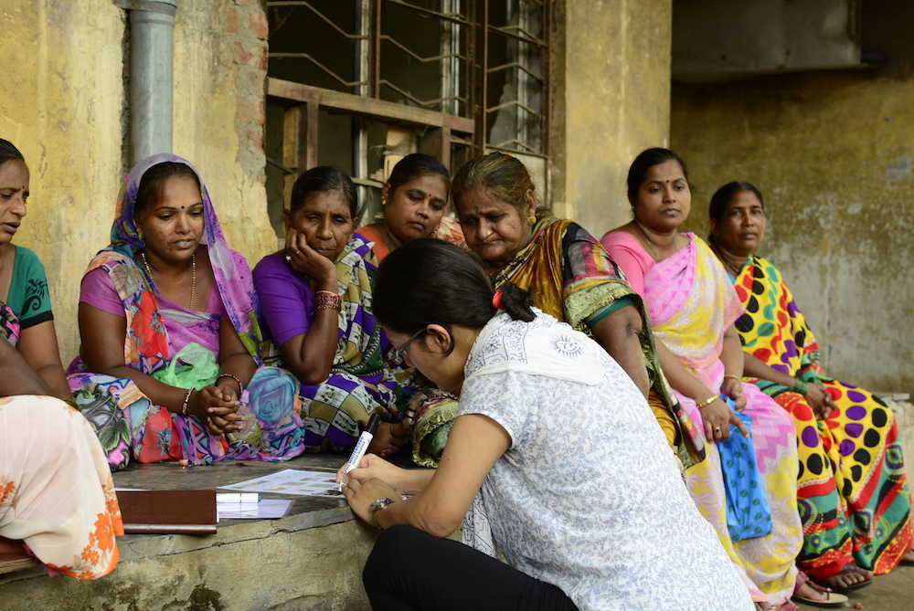

My role: Design researcher
During my International Innovation Corps fellowship with the University of Chicago Harris School of Public Policy, my team was embedded into a project with an Indian foundation and the city of Mumbai whose objective was to “improve the working conditions of urban sanitation workers.” When we arrived, the foundation had already identified several verticals in which to pilot interventions. These included:
When we began work on the last vertical, redesign of worker stations, we had soon noticed that many of the solutions being proposed were largely decisions taken from a top-down approach.
To get started, I created a co-design session that was initially intended to build trust with workers and gain preliminary insights onto their experiences with the current work stations. (Thank you to IDEO’s human-centered design toolkit!) Because I could not speak Hindi or Marathi with the workers, my role was to design the layout of the session.
The initial structure for these sessions involved dividing the workers into groups and having each participate in a card sort activity together. Our goal was to learn what constitutes an “ideal chowki”. For this, we prepared cards that each depicted a basic amenity — a picture of a fan, a bench, a sink to denote water supply, food, etc. By having the workers place these cards in order based on what they perceived as most important, we aimed understand workers’ priorities and pinpoint specific issues with their work environments that we could act on.
In addition to this, we had some workers help us fill in a schedule of their day. We wanted to understand the daily flow of a worker’s day, even beyond their shift as a sanitation worker. This would help us gain a more holistic understanding of each worker and his or her lifestyle.
Though our conversations began with ideal chowki requirements, they soon spiraled into other issues faced by the workers. For instance, one worker mentioned that the design of the sanitation worker uniform had a strong stigma attached that made people in the train give him dirty looks on his way to work. Another mentioned that nutrition was a pressing issue among many sanitation workers, as their shifts start as early as 4am and they don’t generally have time to eat before coming to work. When they take their morning breaks around 10am, the only accessible food options are generally fried street foods. It was the mapping of each worker’s day that brought out insights like these, which we did not foresee at all.
We did, however, run into some challenges. For instance, offering too much freedom to choose amenities led to unrealistic wish lists being compiled by the workers; one worker demanded that housing be provided for free to his entire family. We later amended the exercise so that workers would have to assign monetary values to each item.
This exercise was crucial for building relationships with the workers, as well as with their supervisors. By having a separate team member engage their supervisors, we created a safe zone where workers could freely express their concerns. It was challenging initially to have workers open up and be comfortable around my teammates, but they eventually grew more relaxed and open as conversations went on.
The exercise also helped us understand how working conditions could be improved beyond the obvious quick fixes of simply providing new gloves or machinery. We aimed to see the sanitation workers not just as sanitation workers, but as complicated human beings with a wide variety of issues they deal with on a daily basis.
One of our team’s main work streams — ensuring easy access to nutritious food during work hours — was developed thanks to these sessions.
We shared our findings with both the foundation as well as the Commissioner of L ward, where we conducted these sessions. (Mumbai is divided into 24 wards, and we were working in one that had the largest population of slums.) Both remarked to us that they had not previously taken such a ‘user-centered’ approach in addressing problems faced by sanitation workers, instead employing a top-down approach. Though both the foundation and municipal ward officers had conducted many quantitative studies on, for instance, the workers’ health, and constantly tried to provide enhanced equipment and machinery for the workers, they had not yet had the bandwidth to sit with the workers and truly understand their needs.
(The Commissioner of L ward, who later got reassigned to a new ward, ended up using this user-centered approach to launch a mobile app for citizens to submit grievances to ward officers!)
One important takeaway for me was that there is a huge gap between those to make and direct policy and those who benefit from these policies. A ward commissioner may invest in expensive European machinery or protective equipment to address worker health and safety, but a more cost-efficient and appropriate solution to a more pressing problem may simply be to ensure availability of nutritious food in the morning for all workers. Though ‘user’ insights may not be the deciding factor when making decisions like these that have to do with public services, they should certainly not be neglected.